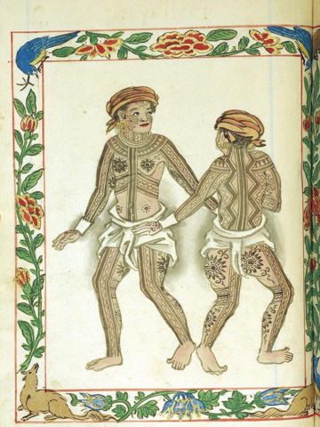

Cebuano: Numbers, Months & Weeks
Cebuano uses two numeral systems:
- The native system (currently) is mostly used in counting the number of things, animate and inanimate, e.g. the number of horses, houses.
- The Spanish-derived system, on the other hand, is exclusively applied in monetary terminology and is also commonly used in counting from 11 and above.

the Pintados ("The Tattooed"),
another name for Visayans of Cebu and its surrounding islands
according to the early Spanish explorers.